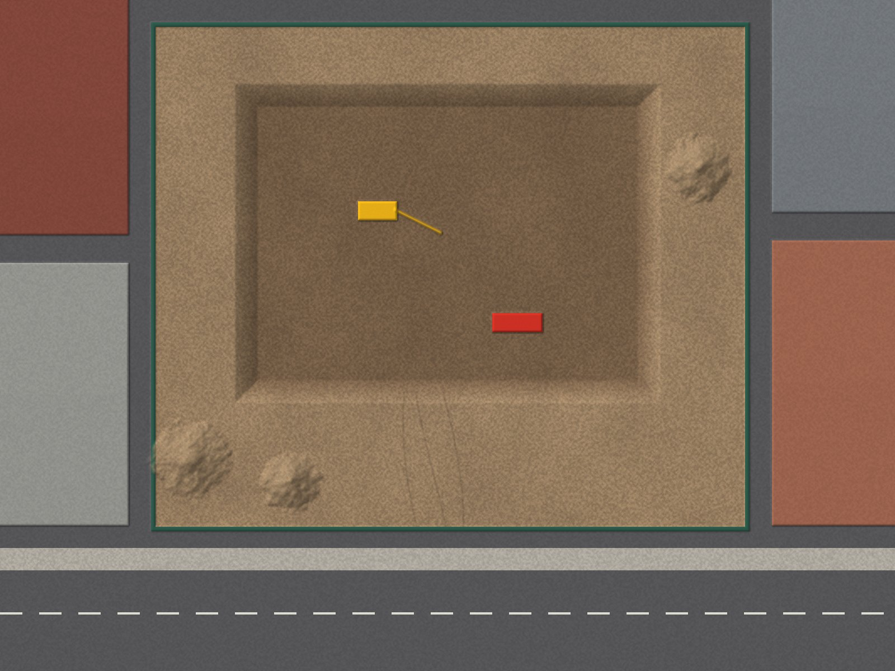
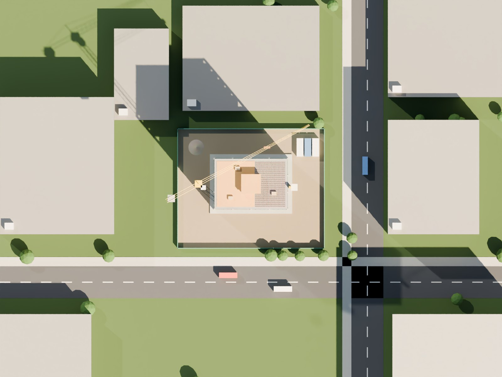

Real estate · construction
Every week of the build, on one map.
Fly the same route every week. The colour map and stereo surface show what was built, what moved and how much material is left, for owners, lenders and site teams.
Fly the same route every week. The colour map and stereo surface show what was built, what moved and how much material is left, for owners, lenders and site teams.


Illustrative imagery generated for this demo, not a capture.
Slide between the two dates: the pit became a slab, columns are up, the crane is in and the stockpile shrank. Each change is measured, not guessed.
MS maps the site on the same route as every week. This week's map is laid over week 3, and every change is pinned.
Live simulation. Drag to look around; change the height to see the ground detail and swath change. Time runs faster than real flight.
The same flight every week becomes a record of the build.
The same route and height every week, so maps line up.
A colour orthomosaic and a stereo surface for every flight.
Dates side by side, with areas and volumes measured.
A progress report for owners, lenders and the site team.